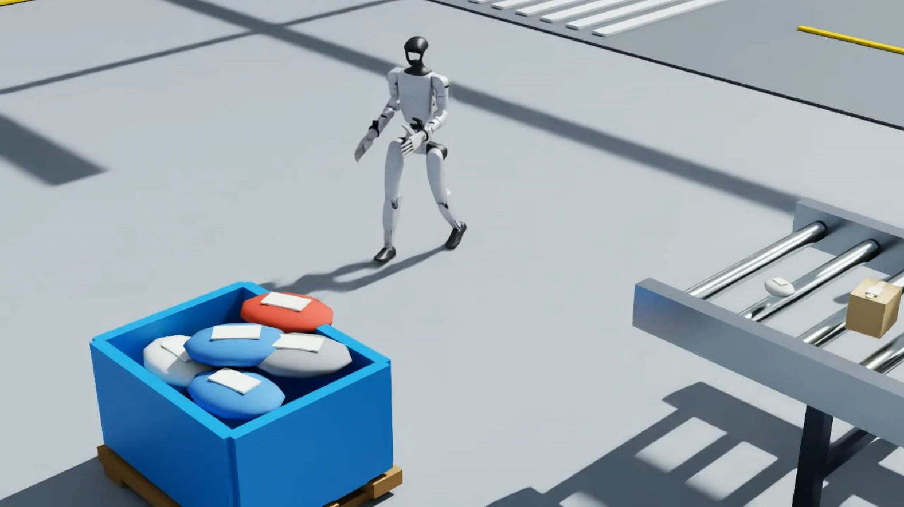

“Move to the blue bin, pick up the red package, turn around, walk to the conveyor belt, and place the package down.”
The VLM combines the worker’s instruction with the factory image. It identifies the humanoid, blue bin, red target package, and roller conveyor, establishes world frame W, explores alternative pickup routes and grasp poses, then selects the feasible task branch.
robot [0.1, 2.4, 0.0]target [-0.9, 1.1, 0.45]place [1.6, 1.0, 0.65]DreamZero receives the structured work plan rather than the raw sentence. It predicts action-conditioned future states for this humanoid, checks the bin rim, reachability, collision risk, and grasp continuity, then converts the selected subgoals into low-level predictive actions.
- 01Walk to bin standby
WalkTo - 02Pre-grasp 0.65 → grasp 0.45 → lift 0.70 m
ArmGrasp - 03Carry to conveyor standby [1.1, 1.0, 0.0]
WalkTo - 04Lower, release at z 0.68, retract arms
ArmPlace
The robot executes, then reports its pose, gripper state, object state, and a new factory frame. A failed grasp or displaced package re-enters the loop for VLM replanning and another world-model rollout.
navigate → grasp → observe → carry → place → verify